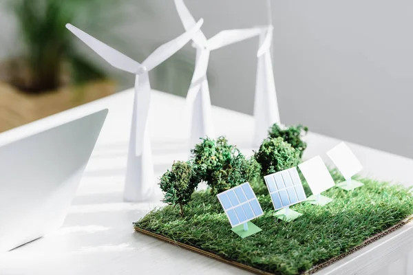

DESARROLLO SUSTENTABLE
¿Qué es el desarrollo sustentable?
El concepto desarrollo sustentable es el resultado de una acción concertada de las naciones para impulsar un modelo de desarrollo económico mundial compatible con la conservación del medio ambiente y con la equidad social. Sus antecedentes se remontan a los años 50 del siglo XX, cuando germinan preocupaciones en torno a los daños al medio ambiente causados por la segunda guerra mundial. Sin embargo, es hasta 1987 cuando la Comisión Mundial del Medio Ambiente y del Desarrollo (CMMAD) de las Naciones Unidas, presidida por la Dra. Gro Harlem Brundtland, presenta el informe “Nuestro Futuro Común”, conocido también como “Informe Brundtland”, en el que se difunde y acuña la definición más conocida sobre el desarrollo sustentable: “Desarrollo sustentable es el desarrollo que satisface las necesidades del presente sin comprometer la capacidad de las generaciones futuras para satisfacer sus propias necesidades”. (CMMAD, 1987:24) El desarrollo sustentable se ha constituido un “manifiesto político”, es decir, se ha elevado como una poderosa proclama que se dirige a ciudadanos, organizaciones civiles, empresas y gobiernos para impulsar acciones, principios éticos y nuevas instituciones orientadas a un objetivo común: la sustentabilidad. En concordancia con lo anterior, el desarrollo sustentable se afirma sobre tres ejes analíticos:
Un desarrollo que tome en cuenta la satisfacción de las necesidades de las generaciones presentes

Esta tesis intrageneracional se refiere a que se requiere de la participación política para crear nuevas instituciones al compás de cambios culturales que permitan reducir la exclusión social, esto es, que reorganicen la vida cotidiana y la reproducción social. Para ello se requiere abordar aspectos como:
- El patrón demográfico. La reducción de la mortalidad y los grandes contingentes de población que se están integrando a la sociedad de consumo, entre otros aspectos, han ocasionado un crecimiento exponencial en la demanda de alimentos, que deriva en una crisis alimentaria en algunas partes del mundo; es por esto que se requiere actuar sobre el patrón demográfico, por ejemplo, introduciendo una regulación voluntaria de los nacimientos que nos lleve a una gradual estabilización de la población.
- La equidad social. La solidaridad intrageneracional es otro aspecto elemental en el desarrollo sustentable. Para esto se requiere redefinir políticas y metas para lograr una mayor equidad en la distribución del ingreso y reducir así las brechas entre países desarrollados y en desarrollo. Para alcanzar la equidad es necesario que haya crecimiento económico pero que éste genere empleos; que sea más equitativo, es decir, que los frutos del trabajo beneficien a todos y no sólo a unos cuantos; que incluya las voces de las comunidades a través de la democratización; que sea un crecimiento que afiance la identidad cultural; un crecimiento que cuide los recursos naturales y el medio ambiente para avanzar hacia un futuro más certero.
- Nuevas políticas para nuevas instituciones. La reforma política es una condición necesaria para el desarrollo sustentable y a través de ella reducir la desigualdad social y evitar la destrucción del medio ambiente, promoviendo decisiones políticas integrales que cuando, por ejemplo, traten aspectos económicos no dejen de lado el impacto social o ambiental que esa política tendría. Asimismo, la reforma institucional requiere modificar los procesos de cooperación internacional y de la gobernabilidad mundial.
- Una nueva cultura civilizatoria. La evolución histórica se ha visto insostenible en lo relativo a la situación ambiental, económica y social. Las transformaciones necesitan llegar a lo más profundo del ser mediante un cambio civilizatorio, de valores, de redefinición de prioridades, de opciones sustanciales que coloquen lo material en su justa dimensión para que el ser humano se realice plenamente y en armonía con su entorno natural y con la comunidad a la que pertenece.
Un desarrollo respetuoso del medio ambiente
La premisa central que sostiene esta tesis implica que el desarrollo no debe degradar el medio ambiente biofísico ni agotar los recursos naturales. Esta premisa es la que le ha dado sentido a toda la concertación internacional desde la Cumbre de Estocolmo en 1972, que pasa por el informe “Nuestro Futuro Común” en 1987, pero sobre todo con un sentido estratégico a partir de la Cumbre de Río en 1992, promoviendo la reflexión sobre cómo compatibilizar las necesidades y aspiraciones de las sociedades humanas, con el mantenimiento de la integridad de los sistemas naturales. Además, se reconoce que el deterioro ambiental de las actividades humanas no es un fenómeno homogéneo, sino que depende de los estilos de desarrollo, el modo de vida y las condiciones del entorno.
Un desarrollo que no sacrifique los derechos de las generaciones futuras
Si bien es difícil definir cuáles podrían ser las necesidades básicas de las generaciones no nacidas, qué deberán satisfacer y cómo lo harán, la justicia intergeneracional es una condición ligada tanto a la equidad social como a la conservación del medio ambiente en el momento actual. En otras palabras, la pobreza no puede aumentar ahora ya que los pobres no pueden ser más pobres en el futuro y los sectores y países ricos deben necesariamente reducir sus niveles de vida y de consumo a fin de no hipotecar el presente y el futuro del planeta. Asimismo, mantener a largo plazo la integridad del ecosistema planetario es también un requisito de la sustentabilidad de las generaciones presentes. De esta manera, la noción de desarrollo, centrada principalmente en el crecimiento material progresivo, ha sido desafiada por una visión más amplia, compleja y holística –donde lo cuantitativo está subsumido en lo cualitativo– que articula el cuidado del medio ambiente, así como la integridad de los ecosistemas, las relaciones sociales solidarias orientadas hacia la equidad y los entornos institucionales de la política para el ejercicio de la gobernanza democrática, ejes constitutivos de la visión holística del desarrollo sustentable. En efecto, desde esta perspectiva, el concepto desarrollo sustentable emerge como una propuesta conceptual holística que articula al menos cinco dimensiones: la económica, la ambiental, la social, la política y la cultural. Dentro de estas dimensiones se abarcan temas como la equidad, las oportunidades de empleo, el acceso a bienes de producción, los impactos ambientales, el gasto social, la igualdad de género, el buen gobierno, una sociedad civil activa en términos de participación social, entre otros, considerándose tanto aspectos cuantitativos como cualitativos del desarrollo.